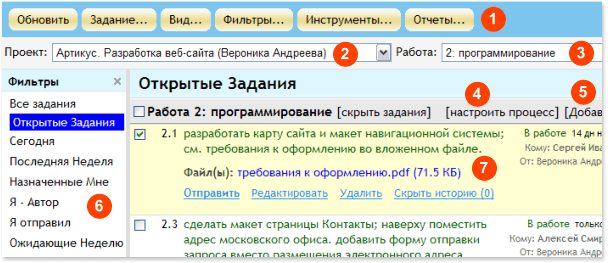
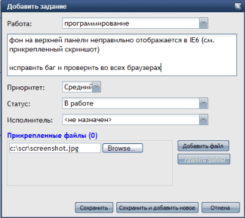
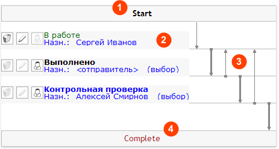
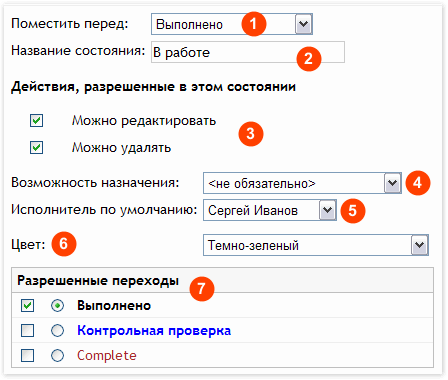
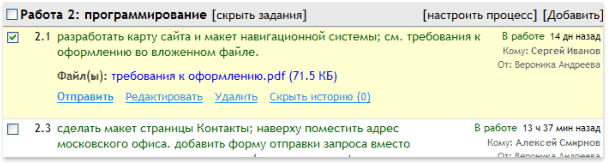
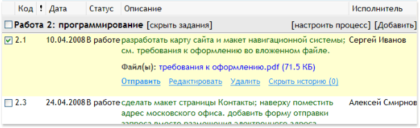

|
WebAsyst Задания одним взглядом
Так выглядит главное окно сервиса WebAsyst Задания:

- Панель инструментов: Щелкните по кнопке (Задание, Вид, Фильтры, Инструменты, Отчеты) чтобы открыть выпадающее меню для доступа к функциям добавления/копирования заданий, настройки вид, выпуска отчетов и т.д.
- Выбор проекта: Щелкните, чтобы открыть выпадающий список доступных проектов и выбрать проект, с которым вы хотите работать.
- Выбор работы: Работы связаны с проектами. После выбора проекта выберите работу, чтобы открыть список заданий, связанных с этой работой.
- Настройка процесса: Процесс – это маршрут, по которому проходит задание по мере его выполнения. Для каждого этапа (состояния) в этом процессе вы можете назначить исполнителя, указать разрешенные переходы в другие состояния и т.д. Вы можете настроить процесс отдельно для каждого проекта и работы.
- Добавить задание: Щелкните, чтобы открыть диалог добавления задания для данной работы.
- Панель фильтров: Выберите фильтр, чтобы ограничить видимые задания в списке определенным критерием, напр. вывести только задания назначенные вами (или вам), задания добавленные недавно или в последние Х дней и т.д. Фильтры полностью настраиваемые и вы можете добавлять собственные фильтры.
- Список заданий: Это главная рабочая область, в которой вы работаете с заданиями: добавляете, пересылаете, редактируете задания и т.д.
|
|
|
Добавление нового задания
Щелкните Задание -> Добавить в панели инструментов или используйте ссылку Добавить задание справа на панели с названием работы.

ПРИМЕЧАНИЕ: Добавить задание можно только в контексте выбранного проекта и работы. Другими словами, прежде чем добавить какое-либо задание, вы должны завести хотя бы один проект и одну работу. Смотрите WebAsyst Проекты: руководство пользователя, чтобы узнать о том как добавить создавать проекты и работы.
В форме Добавить задание:
- Введите описание задания в текстовой области.
- Установите Приоритет: Низкий, Средний и Высокий. Задания с высоким приоритетом будут выводиться наверху в списке заданий.
- Выберите Статус (состояние). Состояния задаются при настройке процесса менеджером проекта. Настройка процесса подробно описана ниже в данном руководстве.
- Исполнитель: Выберите пользователя, ответственного за выполнение данного задания. Вы можете выбрать только из числа пользователей, назначенных на данные проект/работу.
- Щелкните по ссылке Прикрепленные файлы, чтобы открыть область, в которой вы сможете прикрепить файлы к заданию.
- Нажмите кнопку Сохранить, чтобы добавить задание и вернуться в список заданий, или используйте кнопку Сохранить и добавить новое, чтобы остаться в форме добавления заданий.
|
|
|
Что такое процесс (workflow)
Сервис WebAsyst Задания позволяет вам отслеживать исполнение заданий от постановки до завершения, используя механизм управления процессом, основанный на состояниях и переходах. Для каждого проекта/работы вы можете настроить процесс отдельно.
Пример диаграммы процесса приведен ниже:

- Start: Это исходный пункт в истории каждого задания. Когда вы добавляете новое задание, вы должны явно выбрать состояние (статус) из списка доступных состояний, в соответствии со схемой процесса настроенной вашим менеджером проекта. В примере выше есть только одно состояние «В работе», которое вы можете установить для нового задания.
- Состояния: Вы можете добавить в процесс столько состояний, сколь это необходимо чтобы удовлетворить требованиям вашего бизнес-процесса. В примере выше есть три состояния: В работе, Выполнено и Контрольная проверка. Это может быть подходящим схемой для процесса отладки и устранения ошибок при разработке программного обеспечения: а/. Тестировщик находит ошибку и добавляет отчет об ошибке (задание) в состояние «В работе» и назначает Сергея; б/ Сергей исправляет ошибку и пересылает задание в состояние «Выполнено» тестировщику; в/. Тестировщик проверяет и пересылает дальше Алексею для Контрольной проверки.
- Переходы: Процесс предполагает, что задание может быть отправлено из одного состояния в другое. Такие допустимые переходы показаны на диаграмме стрелками. В этом примере из состояния «В работе» задание можно отправить только в состояние «Выполнено», из «Выполнено» в «Контрольная проверка» (переход по умолчания выделен жирной стрелкой) или обратно «В работу» и т.д.
- Complete: Это финальное состояние для каждого задания. Оно обязательно для любого процесса. Дальше пути нет, т.е. состояние Complete в диаграмме процесса может иметь только входящие стрелки и ни одной исходящей. В состоянии Complete на задание нельзя назначить исполнителя.
|
|
|
Настройка процесса
Щелкните Инструменты – Настроить процесс. Выберите проект и работу в списке ниже, для которых вы хотите настроить схему процесса. Либо щелкните ссылку настроить процесс в списке заданий рядом с названием работы.
ПРИМЕЧАНИЕ: Настройка процесса, это прерогатива менеджера проекта, или пользователя у которого есть Полные права на проект.
В диаграмме процесса каждое состояние обозначено прямоугольником с названием состояния (статуса) внутри, напр. В работе, Выполнено и т.д. Щелкните по названию состояния чтобы настроить его, или нажмите кнопку Добавить состояние. Откроется форма настройки состояния:

- Поместить перед: Определяет относительную позицию текущего состояния в последовательности состояний процесса.
- Название состояния: Краткое описание, статус.
- Можно редактировать: Включите этот флажок, если вы хотите разрешить редактирование заданий в этом состоянии. Для заданий в этом состоянии пользователи будут видеть кнопку Редактировать.
- Можно удалять: Включите этот флажок, если вы хотите разрешить удаление заданий в этом состоянии. Для заданий в этом состоянии пользователи будут видеть кнопку Удалить.
- Возможность назначения: Выберите одно из значений:
- обязательно: назначение обязательно; пользователь, добавляющий или отправляющий задание в это состояние, обязан назначить исполнителя
- обязательно/фиксировано – назначение обязательно и на каждое задание в этом состоянии будет назначаться пользователь, указанный в поле Исполнитель по умолчанию (см. ниже)
- не обязательно – задание в этом состоянии может не иметь назначения
не разрешено – в этом состоянии нельзя назначать исполнителя
- Исполнитель по умолчанию: выберите пользователя, который будет предлагаться как исполнитель для каждого нового задания добавленного/отправленного в это состояние. Используете значение «отправитель», если вы хотите назначить по умолчанию пользователя, который отправил это задание из предыдущего состояния.
Пример: Андрей добавил новое задание в состояние «В работе» и назначил Сергея. Сергей сделал работу и отправил задание в состояние «Выполнено». Если для состояния«Выполнено» исполнителем по умолчанию указан «отправитель», то Сергею не следует беспокоиться о выборе назначения при отправке задания в состояние «Выполнено». Андрей будет назначен исполнителем по умолчанию, потому что именно он был первоначальным «отправителем» этого задания.
- Цвет: Этот цвет используется при выводе текста задания в списке заданий.
- Разрешенные переходы: Выберите состояния, в которые задание можно отправить из текущего состояния. Щелкните радио кнопку для того состояния, которое должно быть переходом по умолчанию из текущего состояния.
- Щелкните Сохранить для сохранения изменений настроек текущего состояния и для возвращения в диаграмму процесса.
|
|
|
Шаблоны процесса
Каждый раз, когда вы настраиваете процесс, вы можете сохранить его как шаблон для последующего использования. Чтобы это сделать, нажмите кнопку Сохранить как шаблон в форме настройки процесса. Соответственно, при настройке процесса для новой работы, вы можете выбрать ранее сохраненный шаблон, нажав кнопку Выбрать из шаблонов.
Для работы с ранее сохраненными шаблонами нажмите Инструменты – Шаблоны процессов. Щелкните по шаблону в списке и 1). нажмите кнопку Удалить, чтобы удалить ненужный шаблон или 2). нажмите кнопку По умолчанию, чтобы данный шаблон применялся всякий раз, когда вы создаете новую работу. Сохраненные шаблоны нельзя изменить; если это нужно сделать, то создайте новый процесс и сохраните его как шаблон.
ПРИМЕЧАНИЕ: Доступ к меню Инструменты настраиваемый. Вы должны иметь доступ в секцию Пользователи, чтобы там настроить права доступа для себя и других пользователей. |
|
|
Работа со списком заданий
Список заданий это основная рабочая область. Здесь вы можете добавлять новые задания, осуществлять навигацию по проектам и работам, пересылать задания и назначать исполнителей, редактировать и удалять задания и т.д.
Список заданий сгруппирован по проектам и работам. Внутри каждой работы задания сортированы по приоритету (Высокий, Средний, Низкий) и далее по дате создания (старые задания наверху).
Основные операции в списке заданий описаны ниже. |
|
|
Пересылка заданий в другое состояние
Вы можете отправлять задания из одного состояния (статуса) в другое в соответствии со схемой процесса, настроенного для данной работы.
Наведите курсор на задание и щелкните по ссылке Отправить, которая появится внизу под текстом задания, или щелкните Задание -> Отправить в панели инструментов. В форме Отправить укажите новое состояние, в которое вы хотите переслать задание, выберите исполнителя, если нужно добавьте комментарий, и щелкните кнопку Отправить.
Вы можете отправить сразу несколько заданий. Выберите их в списке и щелкните Задание -> Отправить в панели инструментов.
ПРИМЕЧАНИЕ: Менеджер проекта или пользователь с Полными правами на проект, может пересылать задания из текущего состояния в любое другое, даже если такой переход не предусмотрен настройкой процесса. |
|
|
Редактирование заданий
Наведите курсор на задание, которое вы хотите изменить и щелкните по ссылке Редактировать, которая появится внизу по текстом задания. В форме Изменить задание вы можете внести исправления в текст задания, изменить приоритет задания, исполнителя и добавить/удалить прикрепленные файлы.
Все изменения регистрируются в журнале. Впоследствии вы сможете их увидеть в истории задания.
Не каждое задание можно редактировать. Вы не можете изменить задание если флажок “Можно редактировать” был выключен для данного состояния при настройке процесса. Вы также не можете редактировать завершенные (Complete) задания.
ПРИМЕЧАНИЕ: Менеджер проекта или пользователь с Полными правами на проект, может изменить задания в любом состоянии, даже если редактирование не разрешено в настройке процесса. |
|
|
Копирование/Перемещение/Удаление заданий
Выберите задания и щелкните Задание -> Копировать, чтобы скопировать выбранные задания или щелкните Задание -> Переместить, чтобы переместить выбранные задания в другой проект и/или работу.
Если в той работе, куда вы копируете или переносите задания, нет такого состояния (статуса), в котором выбранные задания в данный момент находятся, то вам будет предложено установить новое состояние для этих заданий из числа доступных.
Чтобы удалить задание, наведите курсор на это задание и щелкните по ссылке Удалить, которая появится внизу под текстом задания. Чтобы удалить сразу несколько заданий, выберите и щелкните Задание -> Удалить. Удаленные задания нельзя восстановить.
Вы не можете перемещать или удалять задания если флажок “Можно удалять” был выключен для данного состояния при настройке процесса.
ПРИМЕЧАНИЕ: Менеджер проекта или пользователь с Полными правами на проект, может перемещать/удалять задание из любого состояния, даже если удаление задания в этом состоянии не разрешено в настройке процесса. |
|
|
Отправка напоминаний
Напоминания о заданиях это email-уведомления, которые можно отправить исполнителям, назначенным на эти задания. Выберите одно или более заданий в списке и щелкните Задание -> Напомнить. В форме Напоминание введите, если нужно, дополнительный комментарий, и включите флажок “Только заголовки” если вы не хотите вставлять в уведомление полный текст заданий.
ПРИМЕЧАНИЕ: Если вы отправляете напоминание для нескольких заданий, которые назначены разным исполнителям, то каждый исполнитель получит напоминание только по своим заданиям. |
|
|
Настройка вида списка заданий
Существует два вида просмотра списка заданий:
Список (вид по умолчанию): Описание задания занимает максимально доступное место в области списка, тогда как дополнительная информация (статус, отправитель, исполнитель и т.д.) смещена в правую часть экрана.

Таблица: Параметры задания выводятся в отдельных колонках в табличной форме.

Чтобы изменить вид, нажмите кнопку Вид в панели инструментов и выберите Таблица или Список.
Щелкните Вид -> Настроить вид, чтобы настроить детали для обоих вариантов просмотра списка, а именно: количество заданий видимых на одной странице, количество видимых символов в описании задания (вы всегда сможете открыть полный текст по ссылке [еще...]), видимые/скрытые колонки для вида Таблица, и некоторые другие опции. |
|
|
Просмотр истории задания
История каждого задания регистрируется в журнале: дата создания и автор, переходы задания из одного состояния в другое, изменения в описании задания и т.д.
Чтобы посмотреть историю задания, наведите курсор на задание и щелкните по ссылке Показать историю, которая появится внизу под текстом задания. Секция с историей задания откроется непосредственно в списке, под выбранным заданием.
Если вы хотите, чтобы история отображалась для всех заданий в списке постоянно, то щелкните Вид -> Показать историю в панели инструментов. Чтобы скрыть историю для всех заданий, щелкните Вид -> Скрыть историю. |
|
|
Печать списка заданий
Щелкните Задание -> Печать и выберите, что вы хотите распечатать:
- Выбранные задания
- Текущую страницу
- Проект полностью (с применением текущего фильтра)
Нажмите кнопку Печать. В новом окне откроется черно-белая версия списка задания, подготовленная для отправки на печать. |
|
|
Фильтры в списке заданий
Фильтры позволяют ограничить вывод заданий в списке только такими, которые удовлетворяют некому критерию. Эта функция удобна при работе с большими списками, в которых задания создаются разными пользователями и назначаются многим исполнителям, в течение продолжительного периода и для сложных процессов с множеством состояний.
WebAsyst Задания имеют предустановленный набор фильтров, которые можно выбрать в панели слева от списка заданий:
- Открытые задания – показывает все задания, которые еще не завершены
- Сегодня – показывает задания, открытые и завершенные, которые были добавлено сегодня
- Последняя неделя – показывает задания, открытые и завершенные, которые были добавлено в течение последних семи дней
- Назначенные мне – показывает задания, назначенные текущему пользователю
- Я отправил – показывает открытые задания, которые текущий пользователь переслал другим
- Ожидающие неделю – показывает задания, которые не пересылались в течение недели (7 дней) или более
Щелчок по названию фильтра в панели слева вызывает немедленное обновление и ограничение списка заданий в соответствии с настройками фильтра. |
|
|
Работа с фильтрами
Фильтры полностью настраиваемые: вы можете создавать новые фильтры, изменять и удалять существующие.
Чтобы создать новый фильтр, щелкните Фильтры -> Добавить. В форме Добавить фильтр введите следующие параметры:
Секция “Показать задания”:
- Создал: только задания, которые создал указанный пользователь, пройдут фильтр
- Отправил: только задания, которые отправил указанный пользователь, пройдут фильтр
- Исполнитель: только задания, назначенные указанному пользователю, пройдут фильтр
- Открытые и закрытые: все задания, открытые и закрытые, пройдут фильтр
- Только открытые: только открытые задания (не Complete) пройдут фильтр
- Только закрытые: только закрытые задания (Complete) пройдут фильтр
Секция “Фильтровать по дате создания”:
- Не фильтровать по дате создания: дата создания задания не имеет значения
- Показать задания созданные в течение последних ___ дней: фильтр пройдут только такие задания, которые были созданы не ранее чем указанное количество дней назад
- Показать задания созданные ___ дней назад или ранее: позволяет найти “старые” задания, если указать в этом параметре, например, 30 дней, то в списке заданий останутся такие, которые были созданы 30 или более дней назад
Другие параметры:
- Выбор статусов заданий: позволяет показать/скрыть задания, которые находятся в определенных состояниях
- Без изменения ___ дней или более: позволяет отыскать “забытые” задания, которые не изменяли своего текущего состоянии указанное количество дней
- Содержат в тексте описания образец: введите слово или фразу, которые должны быть в тексте заданий, которые пройдут фильтр
Каждый фильтр должен иметь имя. Введите название фильтра (например, Мои задания) и нажмите кнопку Сохранить.
Чтобы изменить настройки фильтра, щелкните Фильтры -> Упорядочить. Выберите фильтр в списке и сделайте нужные изменения в параметрах.
ПРИМЕЧАНИЕ: Фильтр “Все задания” изменить и удалить нельзя.
Чтобы удалить фильтр, щелкните Фильтры -> Упорядочить. Выберите ненужные фильтры и нажмите кнопку Удалить. |
|
|
Отчеты
Щелкните Отчеты -> Статистика заданий в панели инструментов, чтобы вывести один из следующих отчетов:
- Проекты и Состояния заданий
- Проекты и Назначенные исполнители
- Проекты и Приоритеты заданий
- Назначения и Состояния заданий
- Назначения и Приоритеты заданий
Для доступа к полному списку файлов, прикрепленных к заданиям, щелкните Отчеты -> Прикрепленные файлы. |
|